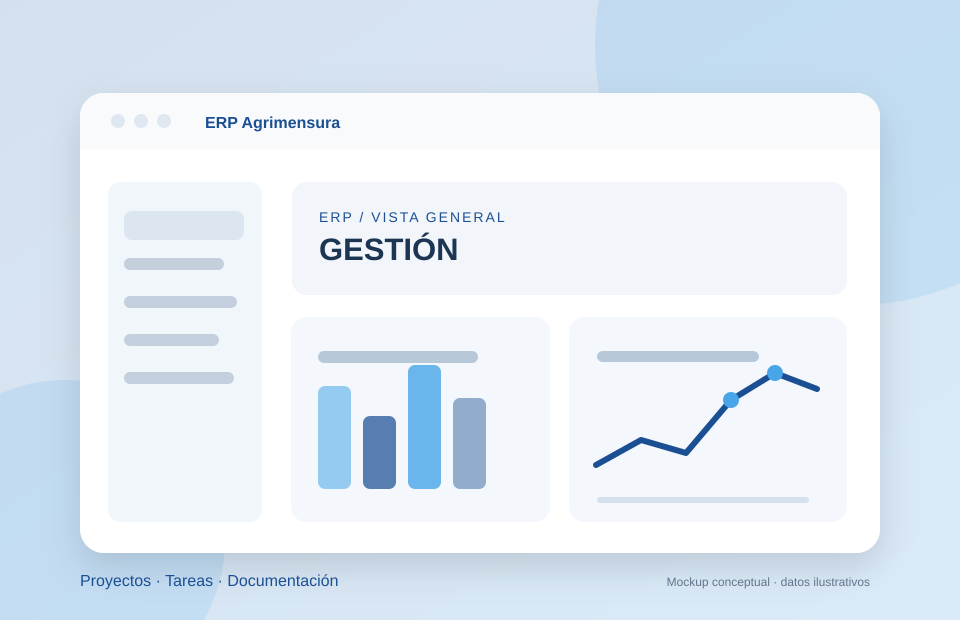

SISTEMAS · AUTOMATIZACIÓN · SOFTWARE
Hola, soy
Maikol Andrés Betancourt.
Transformo procesos en soluciones digitales que funcionan.
Combino desarrollo de software, automatización industrial, integraciones, datos y UX/UI para resolver necesidades reales de personas y organizaciones.
WORKFLOW / 001 CONECTADO
Data → insightsAutomatización activa
✦ Industrial + digitalMB — 2026
SCROLL PARA EXPLORAR
ERPWORKFLOWSDATASCADAUX/UI
EN NÚMEROS
Experiencia que se puede comprobar
Un resumen de hechos verificables, sin prometer resultados que no estén documentados.
MI STACK
El puente entre industria y software
No me limito a una herramienta: analizo necesidades, conecto tecnologías y construyo soluciones completas.
SOFTWARE E INTEGRACIONES
Desarrollo aplicaciones e integro ERP, bases de datos y servicios para centralizar operaciones.
Odoon8nPythonAPIs RESTSQL ServerPostgreSQL
AUTOMATIZACIÓN INDUSTRIAL
Sistemas SCADA, interfaces HMI, PLC y datos operativos conectados con soluciones digitales.
SCADAAVEVASiemensNode-REDIoT
DATOS E INTELIGENCIA ARTIFICIAL
Analizo y visualizo información, incorporando automatización asistida por IA cuando aporta valor.
Power BITableauExcelGrafanaSQLIA
INFRAESTRUCTURA Y UX/UI
Redes, servidores, seguridad técnica y diseño de experiencias web usables y responsivas.
MikroTikUbiquitiVPNHTMLCSSFigma
TRABAJO REAL
Proyectos seleccionados
De un ERP para un estudio profesional a experiencias web y sistemas de automatización.
 2026
2026WEB PROFESIONAL / SC
SC Soluciones Conectadas
Sitio profesional y demos por rubro que transforman necesidades operativas en experiencias navegables y soluciones de automatización.
HTMLCSSJavaScriptDemos B2B

2026SISTEMA REAL · CÓDIGO PRIVADO
ERP Agrimensura
Aplicación privada para organizar clientes, presupuestos, proyectos, tareas y documentación, con integraciones y seguimiento.
SQL Servern8nTelegramAPIs
 2026
2026CASO UX/UI · ACADÉMICO
Cubrí Seguros · UX/UI
Cotización, comparación de coberturas y simulación de pago en un flujo responsive con estados de validación.
HTMLCSSJavaScriptUX/UI
TRAYECTORIA
Experiencia en sistemas, industria y proyectos
Mi recorrido integra desafíos industriales, infraestructura tecnológica, plataformas empresariales y emprendimiento.
SC Soluciones Conectadas
Consultoría, desarrollo y automatización
Proyectos de sistemas de gestión, integraciones, IA y desarrollo web para digitalizar procesos empresariales.
ERPn8nSoftwareIA
Intellymation SRL
Especialista en Sistemas y Automatización
SCADA/HMI, PLC Siemens, sistemas ERP, redes, dashboards e integración de plataformas industriales y empresariales.
SCADAPLCOdooRedes
APRENDIZAJE CONTINUO
Formación y credenciales
Estudio Automatización y Sistemas en UADER, y complemento mi práctica con formación técnica y análisis de datos.
Dos carreras en curso
Licenciatura en Automatización y Control de Procesos Industriales · Licenciatura en Sistemas de Información — FCyT-UADER.
Data Analytics
Curso aprobado de 46 horas; formación complementaria en Excel, Tableau y visualización.
Certificaciones técnicas
Insignias en ciberseguridad e IA, capacitación SCADA/HMI y automatización industrial.

MAIKOL BETANCOURTSistemas · Automatización · Software
SOBRE MÍ
Detrás del código hay una persona que entiende procesos.
Soy Maikol Andrés Betancourt. Mi recorrido comenzó en electrónica industrial y se amplió hacia sistemas, redes, ERP, automatización y desarrollo de software.
Me gusta comprender el problema antes de elegir la tecnología. Busco construir soluciones que no solo funcionen, sino que sean claras, mantenibles y útiles para quienes las usan.
01Visión integralDel proceso industrial a la interfaz digital.
02Aprendizaje continuoFormación constante y proyectos reales.
03Trabajo colaborativoEscuchar, diseñar, construir y mejorar.
SIGUIENTE CONEXIÓN
¿Construimos algo que genere impacto?
Estoy abierto a oportunidades laborales y proyectos vinculados con sistemas, automatización, datos y desarrollo de software.